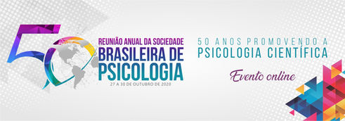
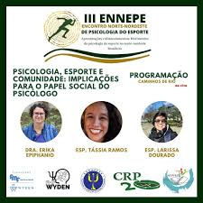
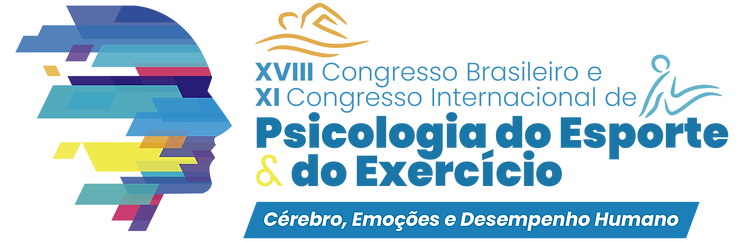
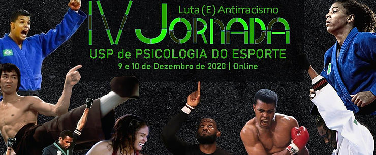
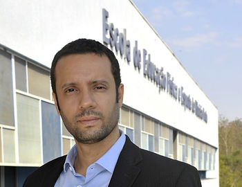

50º Reunião Anual da Sociedade Brasileira de Psicologia.
A Reunião Anual da Sociedade Brasileira de Psicologia (SBP), que aconteceu nos dias 27 a 30 de outubro. Em 2020 chegou na sua 50ª edição e a Psicologia do Esporte esteve presente em toda a programação (veja). A ABRAPESP foi representada por associados (as), parceiros (as) e psicólogas (os) da gestão atual! Acesse o site da Reunião Anual.
III Encontro Norte-Nordeste de Psicologia do Esporte.
De 12 a 14 de novembro aconteceu a terceira edição do Encontro Norte-Nordeste de Psicologia do Esporte (ENNEPE), o maior evento de Psicologia do Esporte das Regiões Norte e Nordeste e a associação esteve presente, participando e acompanhando tudo o que aconteceu.

Postamos uma síntese do evento no nosso Instagram. Mas segue aqui também:
Foram 249 participantes de todo o Brasil, entre profissionais e estudantes, e 56 palestrantes nas programações “Balaios” da Psicologia do Esporte e “Caminhos de Rio”.
Pessoas de vários Estados apresentaram seus trabalhos e realizaram reunião dos Grupos de Trabalho e Comissões de Psicologia do Esporte dos Conselhos Regionais de Psicologia.
Temas:
- Política e esporte;
- Fortalecimento da atuação nos esportes eletrônicos;
- Esporte e cultura;
- Neurociências e esporte;
- Avaliação Psicológica;
- E os desafios do trabalho durante o período de Pandemia.
XVIII Congresso Brasileiro de Psicologia do Esporte e Exercício.

De 27 a 29 de novembro aconteceu o XVIII Congresso Brasileiro de Psicologia do Esporte e Exercício – CONBIPE e o XI International Congress of Sport and Exercise Psychology – ICSEP. A ABRAPESP foi representada no evento pelas professoras: Dra. Katia Rubio e Dra. Gislane Melo. Saiba mais.
IV Jornada USP de Psicologia do Esporte.

Nos dias 09 e 10 de dezembro aconteceu a IV Jornada USP de Psicologia do Esporte: “Luta (E) Antirracismo”. Realizado pelo Grupo de Pesquisa Fenomenologia e Práticas Corporais (GFEPAC) da Universidade de São Paulo (USP), o evento objetivava complementar a formação e atuação profissional dos que trabalham com a Psicologia do Esporte, “seja em um engrandecer teórico, prático ou de formação de consciências mais críticas e políticas acerca do que vivenciamos, sempre acompanhando as mudanças necessárias da sociedade”. (link do evento)

Realizado pelo Grupo de Pesquisa Fenomenologia e Práticas Corporais, com o apoio institucional da Escola de Educação Física e Esporte de Ribeirão Preto da Universidade de São Paulo (EEFERP/USP), foi coordenado pelo ex-presidente ABRAPESP Prof. Dr. Cristiano Roque Antunes Barreira, coordenador do grupo de pesquisa.